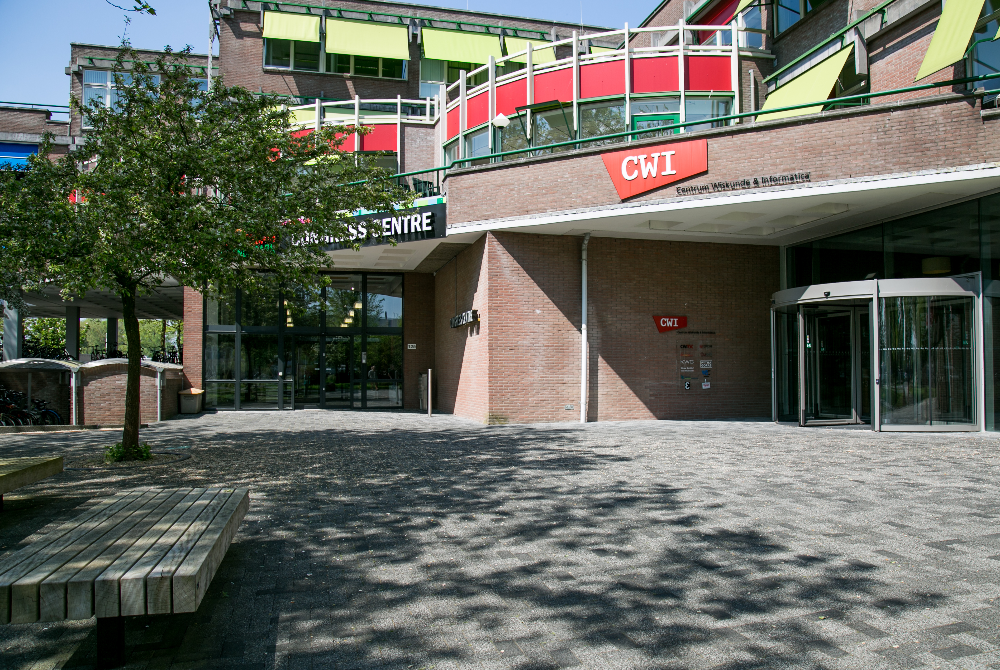

01
 Guido van Rossum
Guido van Rossum
Antes de Python
Guido van Rossum nació en los Países Bajos en 1956. Estudió matemáticas y ciencias de la computación en la Universidad de Ámsterdam, donde obtuvo su título en 1982.
Después de sus estudios trabajó en diferentes proyectos relacionados con la informática. Durante esa etapa tuvo contacto con varios lenguajes de programación y sistemas que influyeron en su manera de entender el desarrollo de software.

Centrum Wiskunde & Informatica
Guido van Rossum